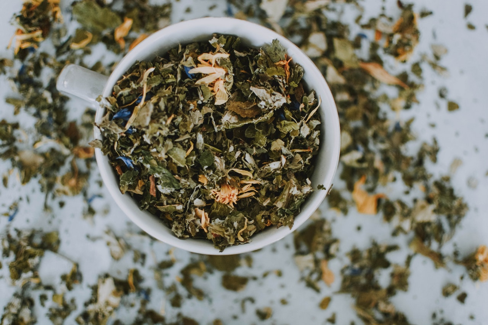

Different Tea Varieties
There are all kinds of teas from around the world and each has their own unique look, flavour and caffeine level. Some teas such as black, Pu’erh and green tea have high to medium caffeine levels and are a good replacement for coffee. While other teas like herbal, rooibos, oolong, mate, and white have low to no caffeine. Below is a chart to help explain each variety better.
| Name | Image | Taste/Flavour | Colour When Brewed | Caffeine Level | Camellia Sinensis Relation |
|---|---|---|---|---|---|
| Black Tea |  | Strong Robust, Bitter | Dark Brown, Copper | High Caffeine | Related |
| Green Tea | light body, slightly bitter | light green or yellow | Medium Caffeine | Related | |
| Matcha | Smooth, rich, sightly bitter | Dark Green | Medium Caffeine | Related | |
| Oolong Tea | light or full body, floral, grassy, sweet, bitter | pale yellow, rich amber | Medium Caffeine | Related | |
| Pu'erh Tea | full body, rich, earthy | Inky brown | High Caffeine | Related | |
| White Tea | light body, mild | pale yellow, light orange | Low Caffeine | Related | |
| Herbal Tea | floral, sweet, fruity, spicy, minty, mild | all different kinds of colours | No Caffeine | Not Related | |
| Rooibos Tea | full body, sweet | red | No Caffeine | Not Related | |
| Mate Tea | strong, earthy, bitter | pale yellow | some Caffeine | Not Related |
My Top 3 Favourite Types of Tea
My favourite tea varieties are matcha, herbal, and rooibos because they are not as bitter to me as other tea varieties like black and white. I don’t add any sweetener to my teas and since these types are usually sweet, they are perfect for my taste buds. I also like the fact that they are versatile, you can have them hot or iced.
Matcha
Matcha tea is Green tea leaves, that have been ground into a fine powder. It can have different flavour profiles depending on the quality of the leaves. Traditional matcha can have a smooth, bright, grassy or creamy flavour, where as non-traditional matcha can be fruity, decadent, floral or even refreshing. The benefits that are associated with matcha tea are that it is energizing, detoxifying, high in antioxidants, and can boost your metabolism.
Tea Accessories I Use
- Matcha Spoon
- Bamboo Whisk
- Matcha Bowl
- Matcha Maker (type of travel mug)
Traditional Way of Preparing Matcha
- I use my matcha spoon to add 2 scoops of traditional matcha powder or 5-6 scoops of flavoured matcha into a my matcha bowl.
- Then I add 60ml or 2oz of hot water and whisk in an M formation until frothy.
- After that I pour the whisked matcha into my favourite mug and top off with more hot water.
- Ready to sip and enjoy while I watch my favourite show.
How I Prepare Matcha
- I use my matcha spoon to add 2 scoops of traditional matcha powder or 5-6 scoops of flavoured matcha into a my matcha maker
- Then I add hot water into matcha maker up to the line marked at the side
- Shake for 30 seconds, or until I see the matcha start to froth. Then I press the button on top of the maker to release the pressure
- All done and ready to drink!
Herbal
Herbal tea is a mixture of spices, herbs, fruits or nuts. It has many different flavour profiles, which can be minty, sweet, floral, fruity, spicy or a combination of each. The benefit associated with herbal tea is that it has medicinal properties. The properties are soothing colds, stress reducing, relaxation boosting, hydrating and it can help with digestion.
Tea Accessories I Use
- Perfect Spoon
- Travel Mug with Steeper Attachment
- Mug with Lid and Removable Steeper
How I Prepare Loose Leaf Tea
- I use my perfect spoon to add 1-2 scoops of loose leaf tea into my steeper attachment
- After that I put my steeper into my mug and pour in 250ml of hot water, and cover it.
- Then I let it steep for 5-7 minutes
- All ready for me to enjoy!
How I Prepare Tea Bags
- I put 1-2 tea bags into my mug
- Then I add 250ml of hot water to my mug and cover it
- After that I let it steep for 5-7 minutes
- I usually keep my tea bags in my mug because I like my tea strong, but you could discard them into the compost them.
Roobios
Rooibos tea is a plant from South Africa, there are two types: red and green. It is naturally sweet, so you don’t need any sugar, honey, etc. The benefits associated are that it is high in antioxidants, electrolytes, and hydrating.
Tea Accessories I Use
- Perfect Spoon
- Travel Mug with Steeper Attachment
- Mug with Lid and Removable Steeper
How I Prepare Loose Leaf Tea
- I use my perfect spoon to add 1-2 scoops of loose leaf tea into my steeper attachment
- After that I put my steeper into my mug and pour in 250ml of hot water, and cover it.
- Then I let it steep for 5-7 minutes
- All ready for me to enjoy!
How I Prepare Tea Bags
- I put 1-2 tea bags into my mug
- Then I add 250ml of hot water to my mug and cover it
- After that I let it steep for 5-7 minutes
- I usually keep my tea bags in my mug because I like my tea strong, but you could discard them into the compost them.